Dunlop CryBaby GCB-95 Cicuit Analysis
The Dunlop Crybaby is a Wah-Wah pedal released around 1982. The pedal is a copy of the original VOX model made by VOX/Thomas Organ Co in 1970. The effect is basically a bandpass filter, it boosts the resonant frequency around 750Hz attenuating above and below harmonics. The rocketing action of the pedal shifts the resonant frequency up and down.
Due to the great success of the pedal, being maybe the most sold guitar pedal of all times, Dunlop produced several versions of the Wah-Wah and signature models adding enclosure customization and small circuit modifications. This study is focused on the first model, the Dunlop Crybaby GCB-95 which is considered to have the classic wah tone.
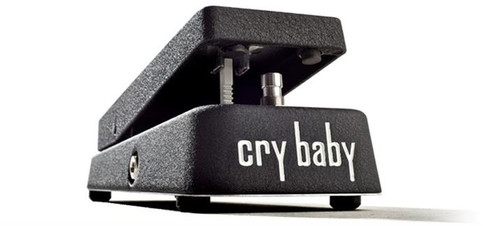
Table of Contents.
1. The Wah-Wah Effect.
2. The Dunlop Cry Baby GCB-95 Circuit.
2.1 Dunlop CryBaby Wah GCB-95 Guts / PCB Layout.
2.2 Dunlop Cry Baby GCB-95 Frequency Response.
2.3 Dunlop CryBaby GCB-95 VS. VOX V847 Differences.
2.4 Dunlop CryBaby GCB-95 Circuit Bias
2.5 Dunlop Cry Baby GCB-95 Components Part List / Bill of Materials.
3. Power Supply.
4. Input Buffer.
5. Active Filter.
6. Output Stage.
7. How the Dunlop Cry Baby GCB-95 works.
8. Dunlop Cry Baby GCB-95 Wah Modifications.
9. Resources.
1. The Wah-Wah Effect.
The Wah-Wah pedal was invented in November 1966 by Lester Kushner and Brad Plunkett working at Warwick Electronics, a division of Whirlpool that owned Thomas Organ Company and Vox. Thomas Organ patented the Wah circuit design but by the time the patent was granted, there were already dozens of copies of the pedal in the market. Enforcing the patent was too expensive so no attempt was made to stop the knockoffs.
Dunlop started manufacturing the Cry Baby GCB-95 in 1982, copying the original VOX design under license, becoming the most sold pedal of all times. Dunlop Wah-Wahs models are: GCB-95, GCB-95F Classic, GCB-95Q, GCB-535Q, EW-95V, 105Q Bass and 1999 Purple, White, Red or Gray Limited Edition.
Signature models include: JH-1 Jimi Hendrix, JH-1FW Jimi Hendrix Fuzz Wah, DB-01 Dimebag Darrel, ZW-45 Zakk Wylde, SC-95/SW-95 Slash Signature, EVH Signature, KH-95 Kirk Hammett, JC-95 Jerry Cantrell, etc...
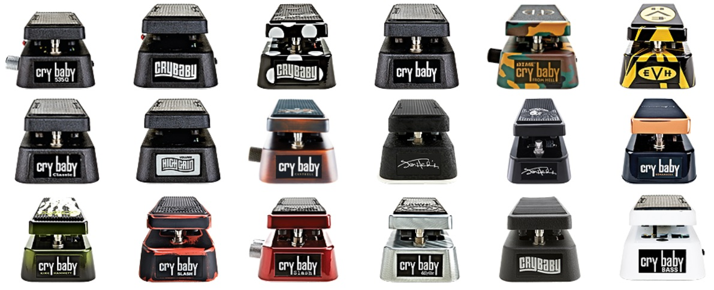
2. The Dunlop Cry Baby GCB-95 Circuit.
The Dunlop Cry Baby GCB-95 schematic can be broken down into four blocks: Power Supply, Input Buffer, Active Filter and Output Stage.
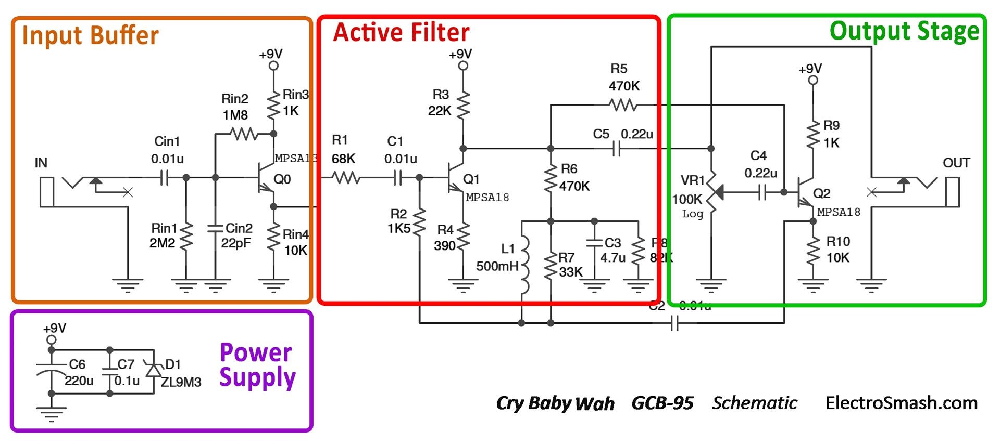
The circuit is undoubtedly inspired on the VOX V847. One of the major concerns of the original VOX design was the tone sucking due to the low input impedance of the Input Stage which was 69.5KΩ. Dunlop fixed this problem adding a buffer which raises the input impedance to 1MΩ preserving the guitar original tone. Besides the Input Buffer there are only two changes in the circuit:
- R4 size is reduced (from 510Ω to 390Ω): creating a slightly higher voltage gain in the Q1 stage.
- R8 is also reduced (from 100KΩ to 82KΩ): this change just varies a bit the bias of Q1, not affecting the tone at all. It is just a component resource change.
The design is built using 3 cascaded transistor stages with a couple of passive components and an inductor; the simple circuit makes the power consumption below 1mA.
The gist of the design remains in how the resonant frequency of an LC filter made up of a fixed inductor L1 and a fixed capacitor C2 can be changed using a variable resistor VR1.
2.1 Dunlop CryBaby Wah GCB-95 Guts / PCB Layout.
Before 1990 all Dunlop Wah pedals had wires between the jacks and the circuit board. In mid-1990 Dunlop changed the PCB design and started mounting the jacks directly on the PCB. Also, from mid-1991 onwards, a buffer circuit was added before the actual wah circuit (it is there if your PCB says ”Rev F” or higher).
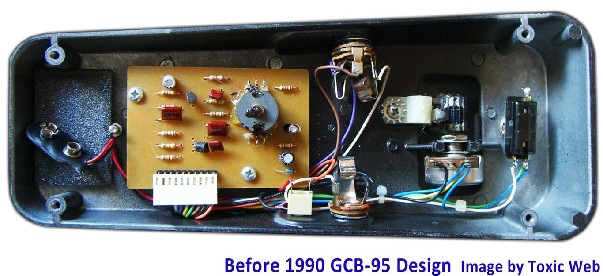
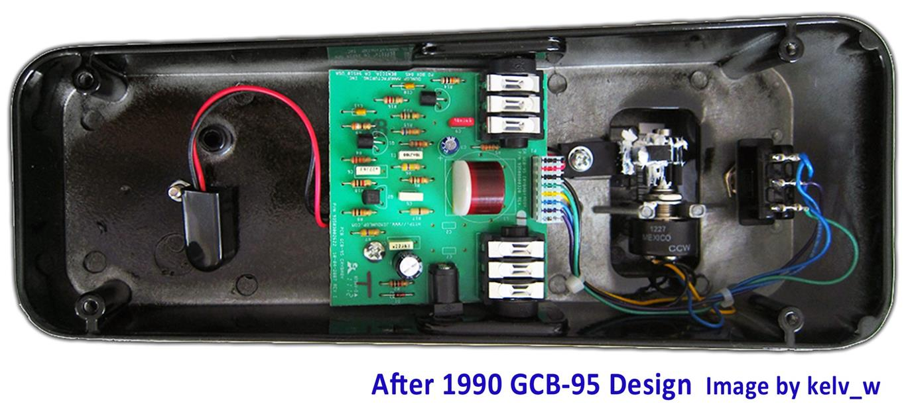
The current revision looks much like the models that have been running since mid-1992. For more detailed info about the different versions of the circuit you can check the StinkFoot website.
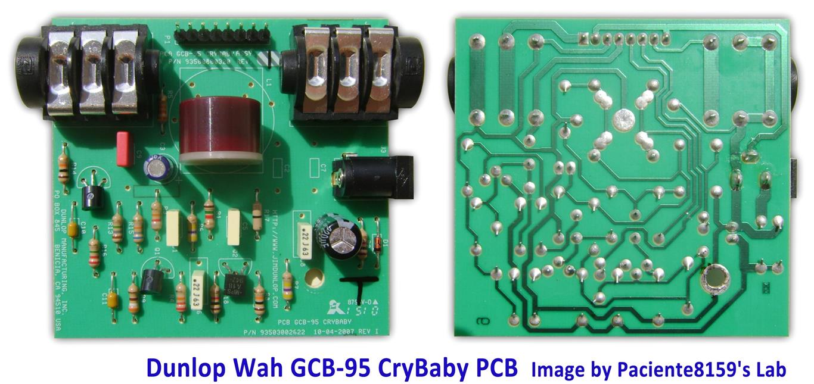
The single layer PCB fits without problems inside the big pedal enclosure using through-hole components.
2.2 Dunlop Cry Baby GCB-95 Frequency Response.
The frequency response is characterized by a resonant peak centered in 750 Hz (with the variable resistor VR1 at mid position). The peak sweeps up and down from 450 Hz to 1.6 kHz. The selected frequencies are amplified up to 18dB while the surrounding ones are attenuated:
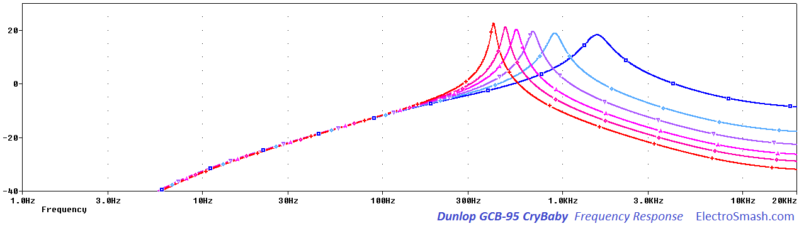
2.3 Dunlop CryBaby GCB-95 VS. VOX V847 Differences.
The circuit of these 2 pedals is pretty similar; the Dunlop design includes the Input Buffer to preserve the signal integrity but the price (Dunlop slightly cheaper), quality construction and sound are really similar. Players often decide between the two of them just on the looks.
Dunlop CryBaby GCB-95 Vs VOX V847 Frequency Response: The crybaby has slightly less bass content. You can check in the graph below how the low freq harmonics are more present in the VOX than in the Dunlop due to the Input Buffer which filters part of this bass content.

2.4 Dunlop CryBaby GCB-95 Circuit Bias
The most important DC bias points are shown in the image below. It is useful for circuit failure troubleshooting:
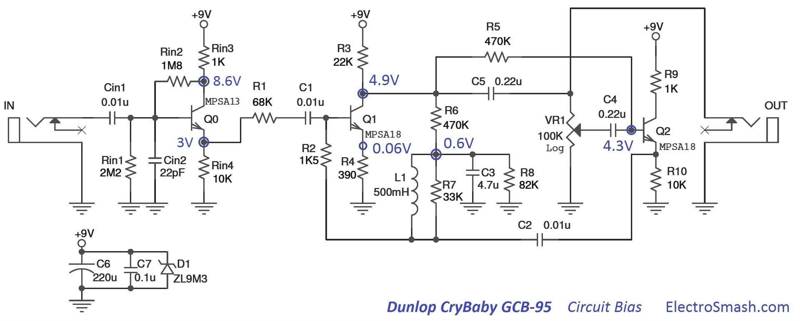
2.5 Dunlop Cry Baby GCB-95 Components Part List / Bill of Materials.
Q0 MPSA13
Q1 MPSA18
Q2 MPSA18
Cin1 0.01uF
Cin2 22pF
C1 0.01uF
C2 0.01uF
C3 4.7uF
C4 0.22uF
C5 0.22uF
C6 220uF
C7 0.1uF
L1 500mH
Rin1 2.2MΩ
Rin2 1.8MΩ
Rin3 1KΩ
Rin4 10KΩ
R1 68KΩ
R2 1K5Ω
R3 22KΩ
R4 390Ω
R5 470KΩ
R6 470KΩ
R7 33KΩ
R8 82KΩ
R9 1KΩ
R10 10KΩ
VR1 100KΩ
Input/Output Jack Connector.
True Bypass Switch.
3. Power Supply.
The simple Power Supply Stage provides a stable energy supply to the circuit.
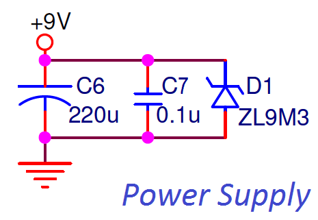
The 9V supply will feed the transistors. The ZL9M3 is a 9.1 zener diode which helps to regulate the power line (protecting the circuit from voltage peaks over 9.1V) and also prevents reverse polarity connections.
- Capacitors C6 and C7 between 9V and ground remove noise from the power line.
4. Input Buffer.
The first stage is an Emitter Follower / Common Collector NPN amplifier, with unity voltage gain, high input impedance and low output impedance which makes it very suitable for buffering the signal, avoiding high-frequency signal loss:
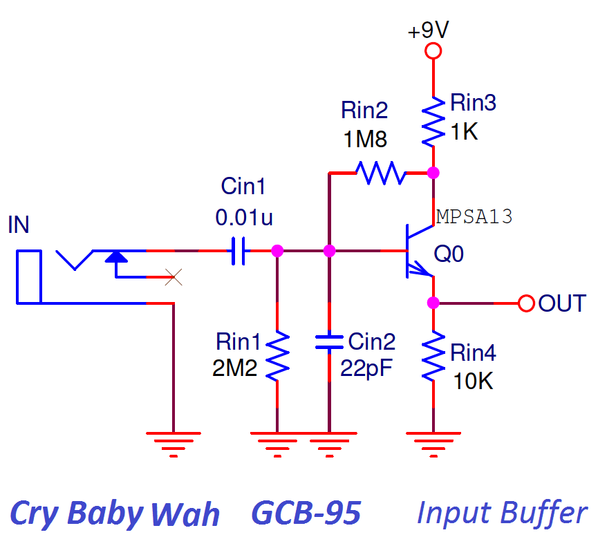
- The 0.01uF input capacitor Cin1 isolates the guitar from any pedal DC potential, protecting the pickups in case of circuit failure and removing hum.
- The resistors Rin1 and Rin2 form a voltage divider in order to bias the transistor Q0.
- Resistor Rin3 in the collector is included to suppress the oscillation tendency.
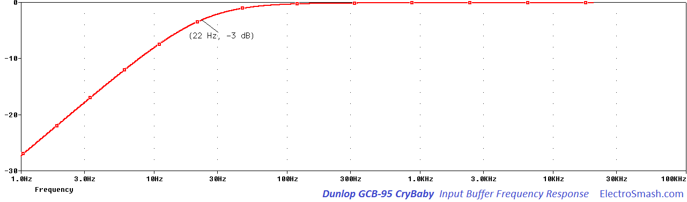
Dunlop Cry Baby GCB-95 Input Impedance:
For simplification we can ignore Rin3, the input impedance is Rin1 in parallel with Rin2 and the input impedance of the emitter follower. It can be calculated following the formula:
1MΩ can be considered a good input impedance to avoid signal degradation. The effect of the resistor Rin3 reduces this value to 750KΩ which is still a good input resistance value.
note: The hybrid-pi model and mathematics behind the Voltage Gain and Input Impedance calculation are similar as in Tube Screamer input buffer, check it for further details.
5. Active Filter.
The Active Filter stage is a Common-Emitter Amplifier with Voltage Shunt Feedback network:
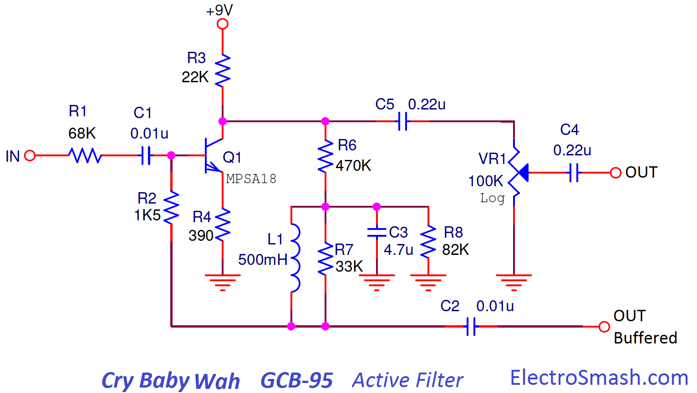
- The C1 is a bypass capacitor that isolates the Input Buffer from the Active filter.
- The resistor R1 is almost all the input impedance of this Active Filter stage and helps to raise the input impedance of this stage preserving signal integrity.
- Resistors R6 and R8 form a voltage divider for determining the bias applied to the base of Q1 through the inductor L1 and resistor R2.
Active Filter Voltage Gain.
In Common Emitter amps, the voltage gain is calculated as GV = RC/RE = 22K/390 = 56.4 = 35dB. The effect of the feedback network has to be taken into consideration, reducing in practice the gain to 19dB. The feedback network from collector to base is composed by the resistance R6 470KΩ and R8 82KΩ to ground (The inductor in parallel with the resistor R7 33KΩ, can be considered as a shortcut).
Applying negative feedback in the transistor amplifier results in an overall reduced voltage gain and transistor input impedance with some improvements like stabilized frequency response and immunity against transistor variations.
The output of the Q2 is connected to the 100K VR1 voltage divider, with the rocketing foot action the voltage gain delivered by the Active Filter Stage is regulated, from 19dB to 1dB.
6. Output Stage.
The last stage is an Emitter Follower used as a low output impedance amplifier with approximately unity gain. The topology is almost the same as in the Input Buffer.
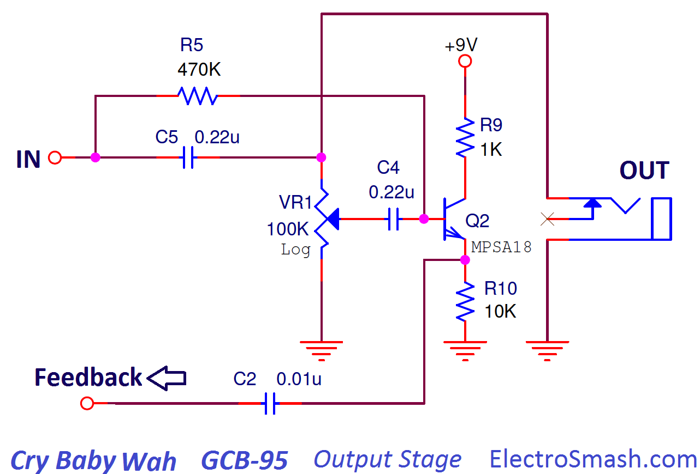
This block will buffer the signal taken from the wiper of the VR1 potentiometer.
- The Q2 transistor is biased through the resistor R5.
- Resistor R10 is a DC return for the Emitter Follower.
- Resistor R9 in the collector is included to suppress the tendency to oscillation.
The output jack of the pedal is taken before the variable resistor VR1 and is not affected by the position of the foot pedal. The position of the potentiometer does not affect the output volume level.
6.1 Dunlop Cry Baby GCB-95 Output impedance.
Once again the output impedance can be estimated using the hybrid-pi model, but in this case, the formula is complex and does not give any intuitive idea. Alternatively, the value can be calculated using PSpice accurate simulation giving a value of 5KΩ. The real value is between 630Ω and 8.6KΩ (The position of the VR1 potentiometer effects the value of the output impedance) which can be considered as good output impedance. For more details check the V847 output impedance calculation which is the same circuit as the GCB95.
7. How the Dunlop Cry Baby GCB-95 works.
The core of the wah design remains in the cap C2 which close the feedback loop between the output (Q2 emitter) and the input stage of the circuit:
The Active Filter Stage amplifies the feedbacked signal coming from the Q2 emitter through C2 and R2. Because of this amplification of the signal applied across the C2 capacitor, the apparent reactance seen by the input signal looking into the capacitor is different from the real one.
This apparent magnitude of the cap C2 reactance magnitude depends on the gain of the signal of the first stage which is fixed by the position of the rocket pedal potentiometer VR1:
- If the pedal is in the lower position, Gain = min, Current through feedback cap C2 = min, Apparent reactance = max, Apparent capacitance = min.
- If the pedal is in the upper position, Gain = max, Current through feedback cap C2 = max, Apparent reactance = min, Apparent capacitance = max.
Connecting a complementary reactance (inductor L1) will produce a resonant circuit which is adjusted by tuning the apparent capacitance of C2.
Note: The impedance of an element can be expressed as Z = R + jX
- In ideal resistors Z = R (impedance = resistance [O])
- In ideal capacitor Z = jX (impedance = reactance [O])
Capacitor Reactance: It is the opposition of the Capacitor to the change of voltage through it. The built-up electric field resists the change of voltage between the capacitor pins. (reactance) XC = -1/wC (capacitance). Reactance is measured in Ohms, not Farads. The Farads is the measure of the capacitance, an intrinsic property of the capacitor element.
8. Dunlop Cry Baby GCB-95 Wah Modifications.
The Dunlop CryBaby GCB-95 can be modified in the same way as the VOX V847.
8.1 GCB-95 True Bypass Mod.
This mod uses a 3PDT switch to bypass the whole circuit in the typical boutique pedal arrangement. Removing the standard switch and installing the 3PDT, it can be done before or after the Input Buffer stage, most of the people do it before the Input Buffer because is easiest to do and to reverse. In the StinkFoot website, there is a great article about how to do True Bypass for the GCB-95.
In the StinkFoot website, there is a great article about how to do True Bypass for the GCB-95.
8.2 Modifying the Wah-Wah Q factor or "Vocal Mod".
The Quality Factor is a parameter that characterizes how narrow or spread is the selected frequency band.
The 33KΩ resistor R7 adjusts this sharpness of the resonant peak. This modification is also known as “Vocal Mod”, some users replace the 33K for a bigger one like 39KΩ, 68KΩ or even 100KΩ to have more vocal sounding.
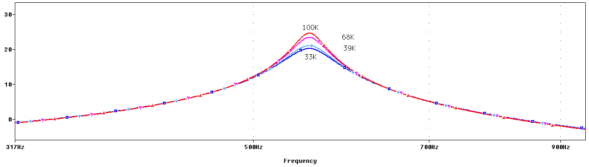
In the above graph, the effect of the R7 is shown, reducing its value, the Q factor is reduced, and the filter bell is spread.
8.3. Modifying the Sweep Range or "Bass Players Mod".
The C2 cap determines the center frequency of the wah sweep. Changing C2 the whole wah sweep range moves up or down. In the images below the shift of the sweep range can be appreciated, using 0.1uF, 0.01uF (default) and 0.001uF.
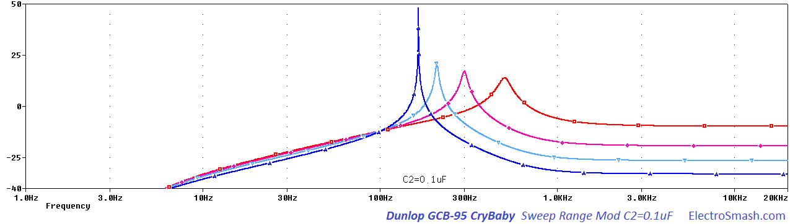
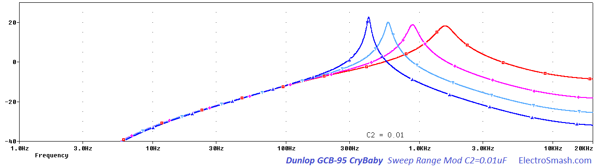
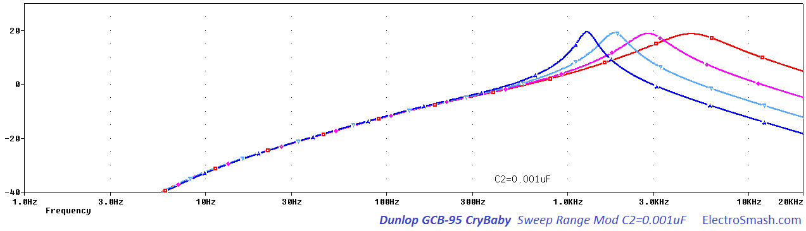
Bigger values move it down towards bass, smaller values move it up. Bass players like to increase the value (typically 0.068µF) for a better bass wah response.
8.4. More Bass and Gain Modification.
The emitter resistor R4 controls the gain level of the effected signal. Reducing it will result in a slight addition of gain and bass content. In the figure below you can see how smaller R4 values modify the frequency response:
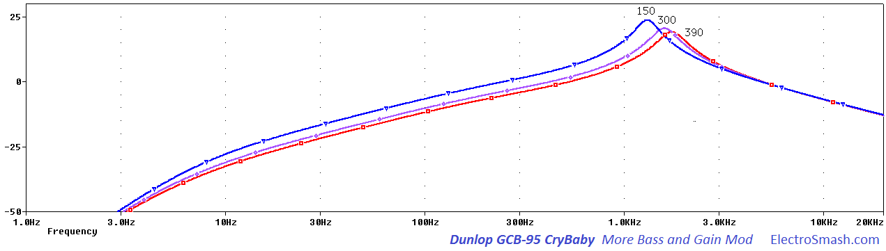
8.5 More Mid Content Modification.
This mod subtle sets the midrange content. Increasing the value of the R2 resistor the heel-down position will sound slightly more strong and emphasized. Typical values for this mod are 2KΩ and 2.7KΩ (default R2 resistor is 1.5KΩ).
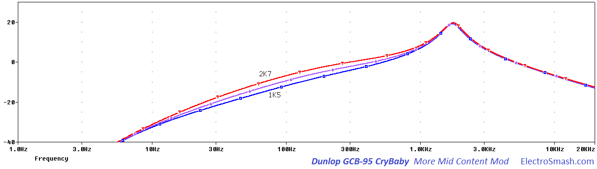
8.6 The V847 Wah-Wah Inductor.
In all vintage pedals, there is some component which is often impossible-to-find/expensive which somehow adds the best sound or the legendary original tone. In this case, the Fasel inductor from the first series is considered the holy grail.
There are several options in the market to play with, everything with a DC resistance between 10 to 200Ω (15O typ.), and inductance between 200mH to 1H (500mH typ.) can be used: The Dunlop Yellow/Red Fasel, TDK, Sabbadius Soul Inductor, Coloursound Inductor, Wipple inductor, SOD inductors, miniature audio transformers and coils from industrial filters.
8.7 Budda Bud-Wah Mod:
The Bud-Wah is basically a GCB-95 basic schematic with premium grade components and equipped with True Bypass. However, the sound of the Bud-Wah against the standard GCB-95 is sometimes reported as sharper/strident where the notes tend to get lost easier. In order to improve the sound and get a "Hendrix" tone, 2 components need to be changed:
- C2 (in GCB-95 ) = 0.022 uF = C5 ( in Bud-Wah) – ok to jump with .01 uF on back side of board.
- R7 (in GCB-95 ) = 20K= R5 (in Bud-Wah) - ok to jump with 47K on back side of board.
Lowering R7 works as a voice mod (section 8.2), only going the other direction with R7 that found the sweet spot. The change allows for more of the original note to come through while retaining a very lush wah.
For those who want the standard sweep range with a sound more like the current Bud-Wah, we suspect that changing R7 to 20K and retaining the .01 uF sweep capacitor will likely produce this result based on the results of the above mods.
As an additional info for builders, this is the part equivalence between the GCB-95 and the Bud-Wah:
| GCB-95 | Bud-Wah (rev. B) | |
|
Rin1 |
R16 |
9. Resources.
The Technology of Wah Pedals by Geofex.
Stinkfoot Wah mods.
Our sincere appreciation to Mike S. for helping us with the article.
Thanks for reading, all feedback is appreciated
Some Rights Reserved, you are free to copy, share, remix and use all material.
Trademarks, brand names and logos are the property of their respective owners.